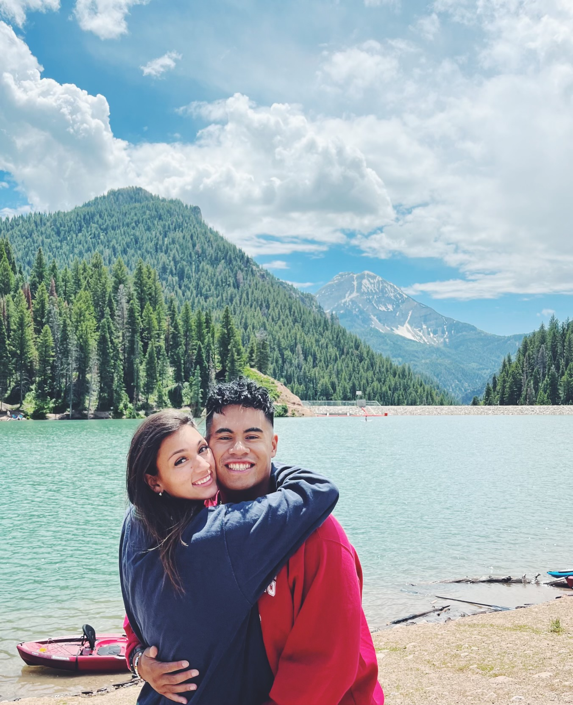

I am a student at Brigham Young University. I am getting married soon! My future Wife is Eliza Tuinei
and we are very much in love. This page is dedicated to us! I hope you enjoy learning fun facts about us.
Hobbies

Hiking
Working out
Treasure Hunting
River Guiding
Swimming
Values
The Gospel of Jesus Christ
Family
Working Hard
School
Learning
Fun Facts!
Jadyn was only born with one kidney
Eliza served her mission in Rome, Italy
Jadyn is a first-generation citizen
Jadyn and Eliza love each other very much and are getting married on May 3rd, 2024